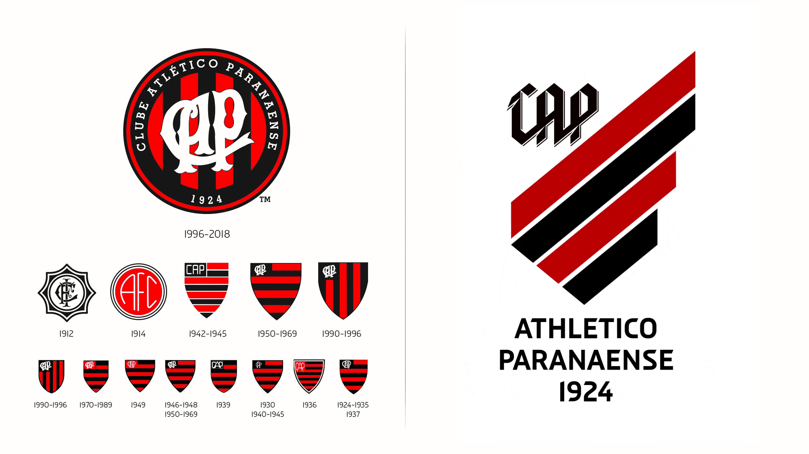
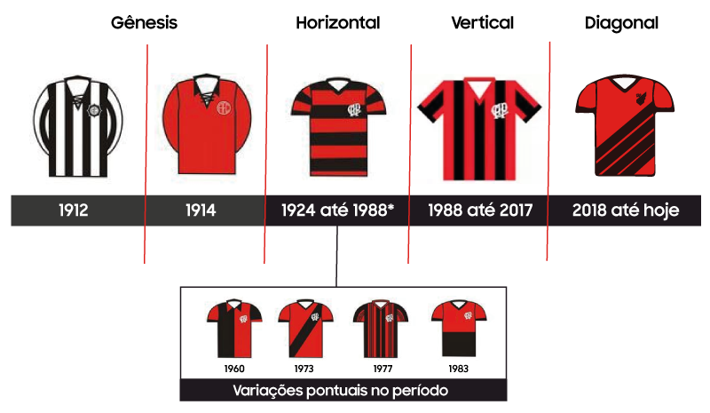

O Clube Athletico Paranaense foi fundado no ano de 1924, em Curitiba, após a junção de dois clubes, o International Foot-Ball Club e o América Futebol Clube; as cores tradicionais do clube são o vermelho e preto, o Athletico joga em seu estádio, popularmente conhecido como Arena da Baixada, que já passou por diversas mudanças ao longo de sua história.
Os uniformes do Athletico sempre tiveram um padrão, as cores vemelho e preto e as faixas, que no ínicio eram horinzontais, depois passaram a ser verticais e atualmente são na diagonal.
